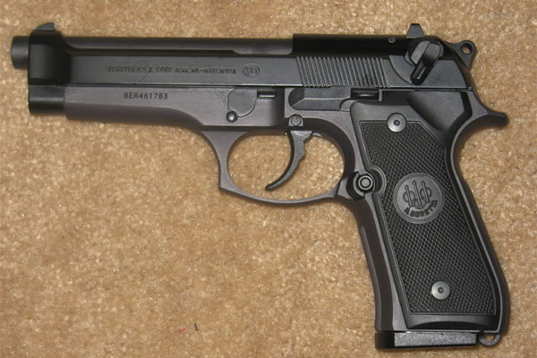

A semi-automatic pistol created by the italians. And they have made a mighty reliable fire arm. Well known, and reliable.This is the gun that the United States Armed Foreces uses.
We sell ammo for the Gun of course, and we are willing to sell you a permit for said gun, if you are willing to use this responsibly.
The 92fs is the caliber of choice for us.